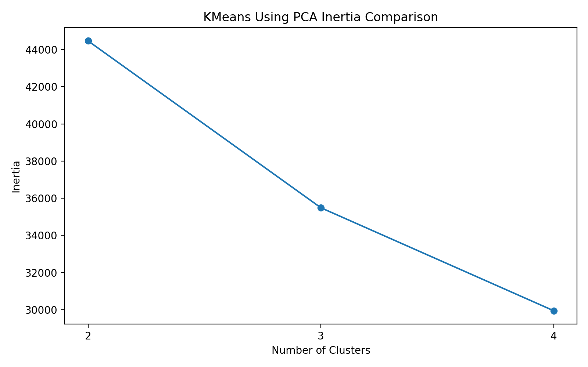
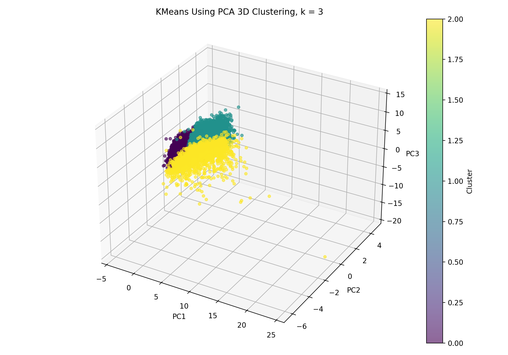

CS 432 Project Journal
Module 3 - Unsupervised Learning, Dimensionality Reduction
Squeezing thirteen borrower variables into three components with PCA, then clustering inside that smaller space.
Why shrink the data at all
Thirteen variables is not a huge number, but it is already too many to picture. You cannot plot a borrower in thirteen dimensions and actually see where the groups sit, and a lot of those columns move together anyway, since income, credit limits, and credit in use tend to rise and fall as a bundle. Principal component analysis is the tool for exactly this. It takes a set of correlated variables and rebuilds them into a smaller number of new ones that capture as much of the variation as possible, which let me carry the structure of the Lending Club data into a space I could actually look at.
I used the same thirteen standardized variables from the clustering module so the two approaches would line up, and I asked PCA to compress them down to three components. Those three are not real columns anymore. They are blends of the originals, and a borrower's score on each can be positive or negative depending on where they fall along that new axis. That abstraction is the price of admission, and most of this module is really about whether the trade was worth it.
How much survived the squeeze
The first component carried 25.24 percent of the variation in the data, the second another 13.49 percent, and the third 11.47 percent, which adds up to 50.20 percent across all three. I want to be honest about what that means. Half of the structure made it into the three component view and the other half did not, so this is a useful simplification rather than a faithful copy. It keeps enough of the shape to be worth plotting and clustering, while quietly leaving some borrower detail on the floor.
With the data reduced, I ran KMeans again at two, three, and four clusters, the same values as before so the results would be comparable. Inertia fell from 44,470.08 to 35,489.32 to 29,946.71 as I added clusters. One caution I had to keep in mind is that these numbers cannot be stacked against the inertia from the clustering module, because that model worked in the full thirteen dimensional space and this one works in three. They live in different rooms. Within this room, though, the pattern was familiar. The biggest improvement came at three clusters, the counts came out at 4,985, 3,008, and 2,007, and three clusters again struck the best balance between detail and something I could explain.

Seeing the groups in three dimensions
The payoff of all this compression is that I could finally plot the borrowers and watch the clusters take shape. Even after reducing to three components, the three groups still mapped back onto real financial differences. One group had the lowest average income along with a lower debt to income ratio, a smaller loan, a gentler interest rate, and a smaller installment, which marks it as the lighter burden group. Another stood out for a much larger loan, a longer term, a higher rate, and a noticeably higher installment, the heavier obligation group. The third claimed the strongest credit profile, topping the others on income, credit lines, limits, and credit already in use.
In the three dimensional view the clusters occupy clearly different regions, though they bleed into one another at the edges rather than sitting in neat separate clumps. That overlap is honest and expected, because plenty of borrowers share similar financial fingerprints even when they belong to different groups. A handful of points also stretch far away from the main cloud along the first and third components, which are the unusual borrowers whose mix of loan and credit traits refuses to sit with the crowd. Seeing them drift off on their own was a nice visual echo of the lone outlier the dendrogram had already flagged in the previous module.

The trade I actually made
Dimensionality reduction is a genuine give and take, and this module made that concrete. On the plus side, PCA turned an unplottable thirteen variable dataset into a picture and confirmed the same three borrower types I had found the long way around. On the minus side, the components are blends, so a cluster that is high on the first component does not translate into a plain sentence about loan amount or income the way the original space did. The clustering module was easier to explain and this one was easier to see, and knowing which version to reach for depends entirely on whether the goal is communication or insight. Either way, watching two quite different routes arrive at the same lighter, heavier, and stronger capacity groups left me trusting that segmentation a good deal more than if it had rested on a single method.